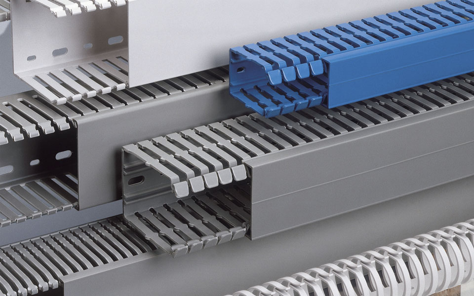
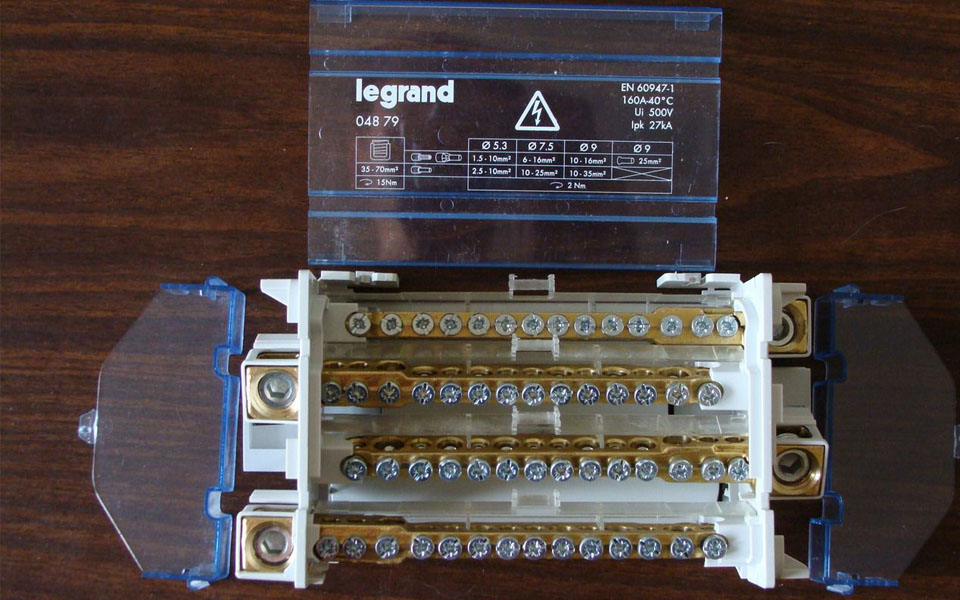
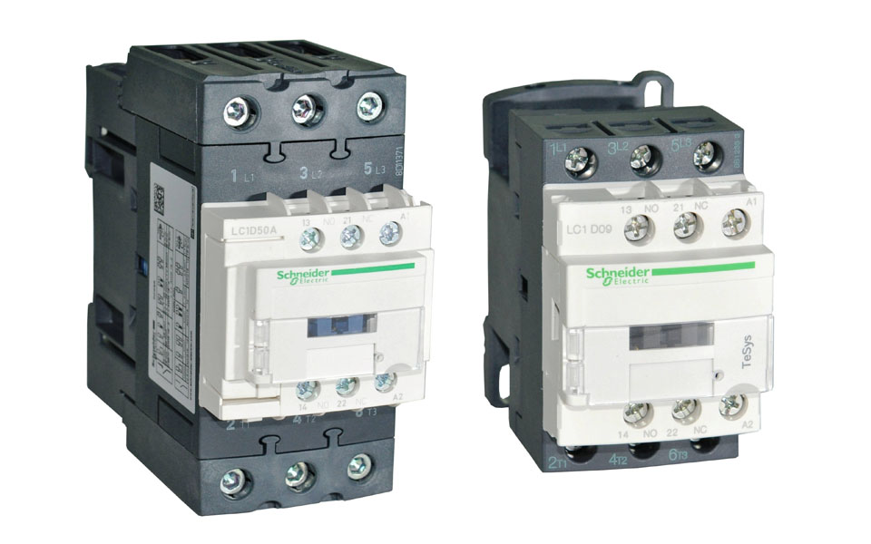
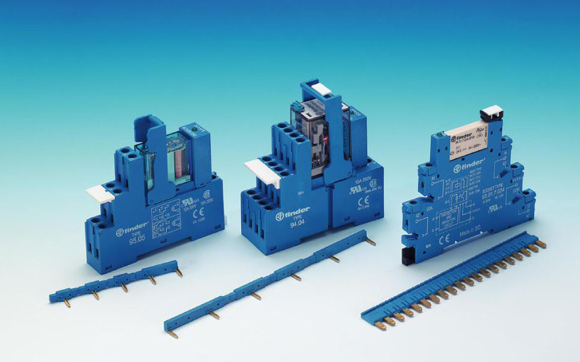

На сегодняшний день на отечественном рынке можно встретить огромную массу компаний, которые занимаются сборкой электрический шкафов и заявляют себя профессионалами в данном сегменте рынка. Но как показывает практика- это далеко не так.
Перед тем, как углубиться в детали, разберем на какие типы можно разделить электрические шкафы. Рассматривать подстанции мы не будем, а сделаем акцент только на самих электрических щитах.
По своему назначению электрические щиты можно разделить на основные три типа:
1. Щиты ввода
2. Щиты распределения
3. Щиты управления
Конечно же возможны варианты, когда в одной оболочке (одном корпусе) можно совместить ввод, распределение и управление. Об этом мы поговорим позже. Но основных типа все же три.
Не углубляясь в подробности, запомним, что щиты ввода необходимы для того, чтобы принять электроэнергию, щиты распределения необходимы, чтобы распределить электроэнергию, а щиты управления необходимы для того, чтобы с помощью электромеханических законов физики управлять теми или иными технологическими процессами.
Несмотря на то, что все три типа принципиально отличаются друг от друга, тем не менее, все три типа состоят из практически одинаковой элементной базы. Все щиты состоят из оболочки – корпуса щита управления, внутри которого располагается оборудование.
Оболочки для щитов бывают из пластика и из металла, делятся по типу монтажа на:
- корпуса для навесного монтажа (в составе корпуса нет монтажной платы)
- корпуса для монтажа оборудования на «монтажной плате».
1. Размеры оболочки (зависят от того сколько оборудования будет размещено внутри). По типоразмерам корпуса для электрических щитов можно разделить на навесные и напольные. Навесные корпуса – это корпуса, которые при помощи специальных монтажных петель (петли могут входить как в комплект оболочки, так и заказываться отдельно) крепятся на стенах помещений. Напольные корпуса устанавливаются на специализированные цоколя (цоколя так же могут, как входить в комплект оболочки, так и заказываться отдельно).
2. Степень пыле-влагозащиты «IP». Ingress Protection Rating — система классификации степеней защиты оболочки электрооборудования от проникновения твёрдых предметов и воды в соответствии с международным стандартом IEC 60529 (DIN 40050, ГОСТ 14254-96).
Код имеет вид IPXX, где на позициях X находятся цифры, либо символ X, если степень не определена. За цифрами могут идти одна или две буквы, дающие вспомогательную информацию. Например, бытовая электрическая розетка может иметь степень защиты IP22 — она защищена от проникновения пальцев и не может быть повреждена вертикально или почти вертикально капающей водой. Максимальная защита по этой классификации — IP68: пыленепроницаемый корпус, выдерживающий длительное погружение в воду под давлением.
При выборе корпуса отдельное внимание следует уделить аксессуарам, которые могут как значительно облегчить процесс сборки щитов (различные направляющие, крепежи, держатели и т.п., так и быть необходимым и обязательным атрибутом (термостаты, вентиляторы, кондиционеры), который необходим для обеспечения качественного и длительного функционирования щита.
Обязательным атрибутом щитов являются DIN-рейка и кабель-каналы. Кабель-каналы (или короба) (кабель-канал, монтажный короб, электротехнический короб, электромонтажный короб) — термины, обозначающие электротехнические изделия, обобщенно представляющие собой замкнутый профиль прямоугольного сечения с плоским основанием, предназначенный для монтажа на поверхности (на крепежную рейку или монтажную плату) и заключения в своем объёме проводов и кабелей.
Кабель-каналы состоят из основания и крышки. Вначале основание закрепляется на поверхности (приклеивается в случае мини-канала или крепится на винтах/заклёпках/специальных крепёжных элементах), затем в него укладывается провод, а потом вся конструкция кабель-канала закрывается крышкой. Благодаря соответствующему профилированию крышки и основания кабель-канала, они просто и надежно фиксируются между собой без использования дополнительных крепежных элементов.
DIN-рейка — обобщенное название металлического профиля, применяемого в электротехнической промышленности. В зависимости от требований (вес, прочность, сила тока, проводимая через клеммы заземления) выпускается либо стальная гальванизированная, либо алюминиевая. Бывает сплошная или с регулярным шагом перфорации, также есть с предварительной насечкой для облегчения разделки на определенную длину. DIN-рейка необходима для фиксации на ней электротехнического оборудования.
Ну и конечно же невозможно ни в одном шкафу обойтись без монтажных проводов. Тип провода, который необходим для изготовления щитов – ПуГВ (ПВ3). ПуГВ – провод установочный гибкий с ПВХ покрытием. Монтажный провод делится на сечения. По сечению при изготовлении щитов используют провод от 0,5 до 70 миллиметров квадратных (сечения существуют и меньше 0.5 и более 70, но для изготовления щитов используют провода сечением от 0,5 до 70 мм кв. В случае, если 70 мм кв не достаточно, монтаж ведут гибкими или негибкими медными шинами). Длина используемого провода определяется исходя из количества оборудования и структуры кабельных каналов.
При выборе провода следует особое внимание уделить тому в соответствии с чем изготовлен провод. По техническим условиям (ТУ) или по ГОСТу. Рекомендуется выбирать провод, изготовленный по ГОСТу, так как технические условия производитель прописывает сам и зачастую при изготовлении занижает сечение провода и толщину ПВХ-покрытия.
Остальные элементы щитов зависят от конкретных целей и задач, выбираются и рассчитываются инженерами в соответствии с внутренними регламентами, а также в соответствии с ПУЭ, ГОСТ и СНиП.
Познакомимся с основными типами оборудования, необходимыми для изготовления щитов. Конечно же ни один щит не может обойтись без вводного устройства вне зависимости какой это щит, только вводной или же щит распределения и управления. Вводное устройство должно быть всегда. Это может быть вводной рубильник, автоматический выключатель, кросс-модуль или же просто клеммы или группа клемм. Итак, давайте разберем что это за вводные элементы:
-Рубильник (выключатель нагрузки) — простейший электрический коммутационный аппарат с ручным приводом и металлическими ножевыми контактами, входящими в неподвижные пружинящие контакты (гнёзда), применяемый в электротехнических цепях для включения/отключения нагрузки с определенной силой тока.
-Автоматический выключатель (механический) (МЭС 441-14-20), «автомат» - это механический коммутационный аппарат, способный включать, проводить и отключать токи при нормальном состоянии цепи, а также включать, проводить в течение заданного времени и автоматически отключать токи в указанном аномальном состоянии цепи, таких, как токи короткого замыкания.
Автоматические выключатели предназначены для многоразовой защиты потребителей от перегрузок и коротких замыканий. Некоторые модели обеспечивают защиту от других аномальных состояний, например, от недопустимого снижения напряжения. Главным отличием от плавкого предохранителя является возможность многократного использования.
- Кросс-модуль предназначен для того, чтобы принять провод с большим сечением и распределить по потребителям проводами с меньшим сечением. Корпус блока имеет прозрачную крышку, которая позволяет производить визуальный контроль.
- Клемма - электроустановочное изделие, предназначенное для соединения проводов. Представляет собой пару (или больше) металлических контактов с узлами крепления к ним проводов в диэлектрическом корпусе.
Для защиты электрических цепей и распределения электроэнергии применяются УЗО, ДИФавтоматы и просто автоматические выключатели. С автоматическими выключателями мы уже познакомились, давайте познакомимся с УЗО и Дифавтаматами:
- Устройство защитного отключения (УЗО) (residual current device (RCD)) — Механический коммутационный аппарат, предназначенный для включения, проведения и отключения токов при нормальных условиях эксплуатации, а также размыкания контактов в случае, когда значение дифференциального тока достигает заданной величины в определенных условиях.
УЗО защищает человека от поражения электрическим током и от возникновения пожара, вызванного утечкой тока через поврежденную изоляцию проводов.
- Широкое применение получил комбинированный аппарат, совмещающий в себе УЗО и автоматический выключатель — автоматический выключатель, управляемый дифференциальным током , со встроенной защитой от сверхтока (АВДТ). Преимущественно должны использоваться УЗО, представляющие единый аппарат с автоматическим выключателем, обеспечивающим защиту от сверхтока.
Теперь мы можем сказать, что познакомились с основными устройствами, которые используются для щитов ввода и распределения. Теперь перейдем, пожалуй, к самому сложному и интересному типу щитов – щитам управления. Состав щитов управления может быть крайне разнообразным и включать в свой состав довольно специфичные и редко применяемые устройства. И так как перечень устройств для щитов управления крайне обширен и многообразен, то мы познакомимся только с наиболее часто применяемыми элементами.
Любой щит управления предназначен для управления каким-либо технологическим процессом. Управление может быть «ручное» (механическое) и автоматическое. При варианте с ручным управлением используется следующая пускорегулирующая аппаратура: кнопки, лампочки, переключатели, контакторы (пускатели), реле управления. А при автоматическом управлении обязательным элементом является контроллер – мозг системы управления. Рассмотрим немного подробнее каждый элемент:
- Кнопки (обозначаются на схеме SB) управления имеют круглую, овальную или прямоугольную форму. Основное назначение подача или отключение управляющего сигнала.
- Лампочки (обозначаются на схеме HL) – светосигнальная аппаратура, предназначенная для индикации состояния тех или иных приборов и сигналов.
- Переключатели (обозначаются на схеме SA) – предназначены для переключения режимов работы. Чаще всего применяют двух и трех позиционные переключатели..
- Контакторы (пускатели) (обозначаются на схеме KM) - электромагнитный аппарат, предназначенный для частых дистанционных включений и выключений силовых электрических цепей в нормальном режиме работы. Разновидность электромагнитного реле.
- Реле управления (обозначаются на схеме К) - электрическое или электронное устройство (ключ), предназначенное для замыкания и размыкания различных участков электрических цепей при заданных изменениях электрических или неэлектрических входных воздействий.
Обычно под этим термином подразумевается электромагнитное реле — электромеханическое устройство, замыкающее и/или размыкающее механические электрические контакты при подаче в обмотку реле электрического тока, порождающего магнитное поле, которое вызывает перемещения ферромагнитного якоря реле, связанного механически с контактами и последующее перемещение контактов коммутирует внешнюю электрическую цепь.
- Контроллер – это многофункциональное устройство управления. Контроллеры могут быть как свободно программируемыми, так и параметрируемыми. Свободно программируемые контроллеры могут быть запрограммированы под любые типы задач. Параметрируемые уже имеют заранее заложенную логику и предназначены для конкретных задач, например, для управления климатом и не могут быть использованы для решения других задач.
Немаловажными элементами, которые крайне важны при изготовлении любых щитов – это квалификация и опыт всех участников процесса изготовления, а также инструментальная оснастка сборочного производства. Конечно же можно закупить самые дешевые комплектующие, нанять «знакомого электрика», купить одножильных проводов и худо-бедно смонтировать щиток. Безусловно такой вариант будет самый быстрый и дешевый, но вот только в этом случае не приходится говорить о надежности и долговечности. Если Вы хотите получить надежное и качественное решение — выбирайте оптимальное решение по основному критерию «цена-качество». Экономить надо, но экономьте разумно! Сейчас на рынке бытует мнение, что квалифицированная сборка — это очень дорого. Безусловно это дороже, чем в варианте, который мы рассмотрели выше, но и не так дорого, как может показаться на первый взгляд. Из практики можно однозначно сказать, что, имея потребность в изготовлении щитов управления или распределения, лучше отдать сборку профессионалам или стать профессионалами!
(автор статьи Онищенко Сергей, г. Москва. Компания Fatec)